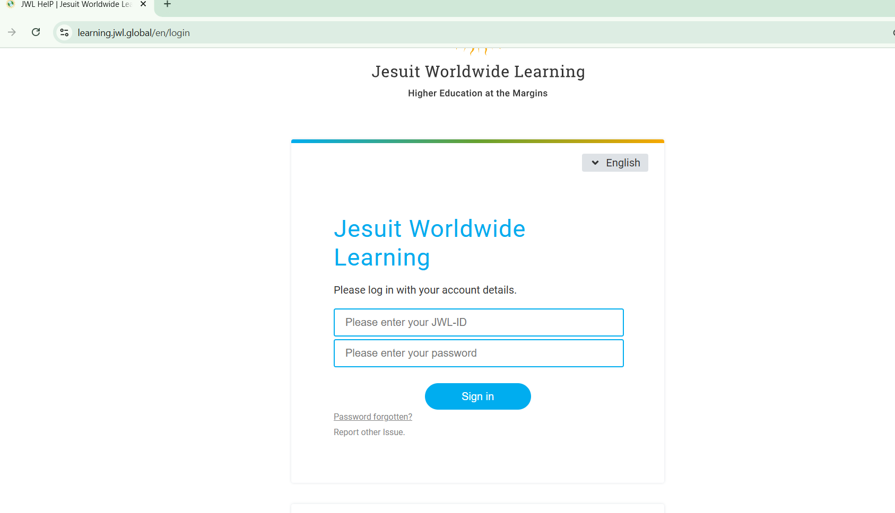
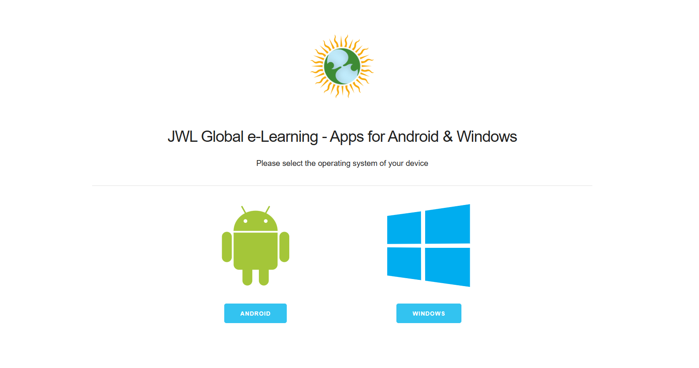

How to Open Your course online?
This going to be supper easy for as you might have already studied some other courses, if not, do not be worried I will explain everything here.😊
- First, connect your device to internet and open and search engine type learning.jwl.globa
- Second, you will see two box appeared. enter your JWL ID in the first one and your password in the second and log in. If you do not know about your ID and Password, please refer to your center coordiinator.

- Third, you will see the below page as explained in the following
- Home
you will see your course (S) and some additional courses
- Courses
You will see the courses you are going to study and there you will see each unit separately. To open any unit you can click on the "Start Unit/Unit Tasks"
- Class:
Here you can see your online and on-site facilitators and as well as your classmatesby clicking on them. 👉Also you can see your grade and performance by clicking on the "+"button
- Support: click on this link to download the JWL App.
- Glossary
- Feedback
- Report Issue
- Install E-Learning App
https://apps.jwl.global/ 
- My Ticket
If you need help click on contact me